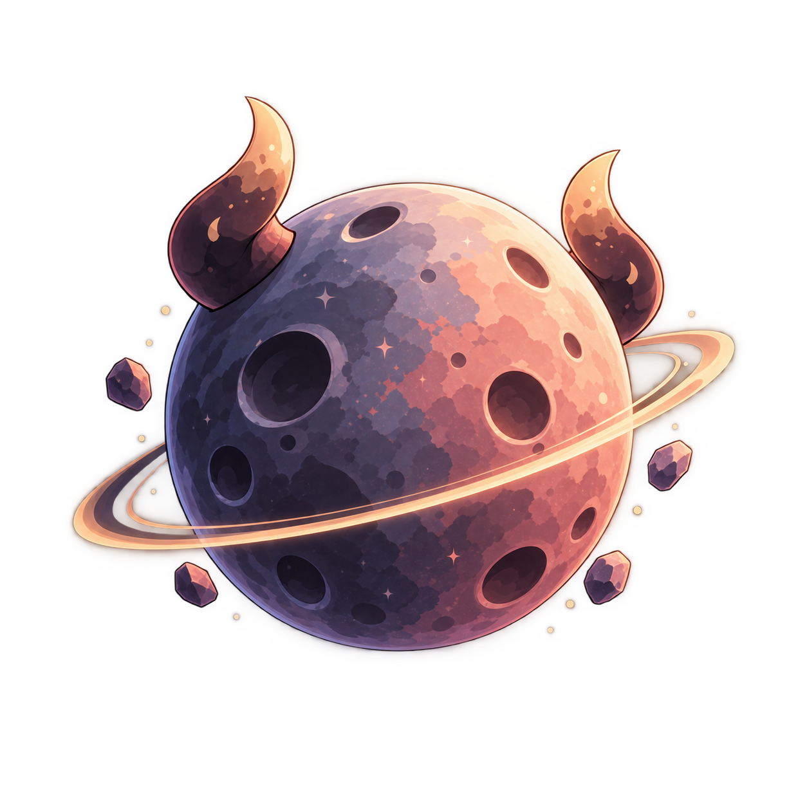
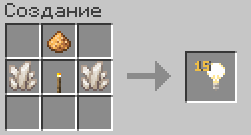

Моды для игры
Для голосового общения и экранов в игре установите два мода.
На странице каждого мода выберите файл для своей версии Minecraft и загрузчика.

Ванильный Minecraft-сервер про уютное выживание, живое сообщество и мини-игры, которые будут развиваться вместе с нами.
Все важные вещи - в одном месте: анонсы, ивенты, объявления, новости сервера, дружеские посиделки и голосовое общение с игроками Lumori.
✦ Discord LumoriПрисоединитьсяLumori - это ванильный Minecraft сервер. Здесь можно строить, исследовать мир, знакомиться с людьми и просто играть в своём темпе.
Параллельно на сервере будут появляться и развиваться мини-игры - отдельные активности, к которым можно возвращаться между большими приключениями в основном мире.
С момента открытия сервера · 2 октября 2026 года
Статус обновляется автоматически примерно раз в минуту.
Там, где хорошие люди, тёплые стримы и мир, который мы строим вместе.
Для голосового общения и экранов в игре установите два мода.
На странице каждого мода выберите файл для своей версии Minecraft и загрузчика.
Продавайте предметы другим игрокам через сундук, бочку или шалкеровый ящик.
/shop create <название>./shop price <число>.Без назначенной цены магазин товар не примет.
/shop prices — минимальные цены./shop seller — свои магазины и дополнительные места./shop address <адрес> — адрес магазина, на который смотрите./shop withdraw или Shift + ПКМ — забрать выручку.Объединяйтесь с игроками, управляйте городом и общайтесь в отдельном чате.
/town create <название>. Название: от 3 до 24 символов./town register <тег>. Тег: от 1 до 4 букв; регистрация сейчас автоматическая.Лимит жителей и заместителей не установлен.
/town invite <игрок> — пригласить игрока, который сейчас на Survival. Приглашение действует 5 минут./town invites, /town accept, /town deny — посмотреть, принять или отклонить приглашение.?, чтобы написать в городской чат./town list, /town info, /town leave — список, сведения и выход./town kick, /town promote, /town demote — управление жителями./town description, /town rename, /town flag — оформление города./town transfer, /town delete — передача и удаление города.Полный список команд: /town help.
Городу нужны свои правила в книге. Унии заключаются письменным соглашением глав; войны возможны только с согласия сторон и одобрения администрации. После выхода из города есть 3 дня, чтобы забрать вещи.
Правила городов →Дополнительные настройки персонажа и удобства для игры.
/size — изменить размер персонажа./color — изменить цвет ника./enter и /exit — настроить сообщения входа и выхода.item, online, random, cords, exp, ping, Plus./chunks — настроить дальность на Survival до 16 чанков._tw; Plus должен быть активен на обоих./plus menu — выключать отдельные возможности и управлять своей меткой на карте. Vanish скрывает её всегда./plus — срок подписки и ссылка на магазин./plus help — подсказка по командам.Собирайте эмодзи и выбирайте символ для своего профиля.
/emoji — посмотреть свою коллекцию./emoji set <символ> — выбрать доступный эмодзи./emoji cases — посмотреть ключи от кейсов.Эмодзи ● есть у каждого игрока. Кейсы открываются у специальных сундуков в Lobby.
Бесплатный ключ можно получить за голосование за сервер:
Смена Minecraft-ника и Discord-аккаунта выполняется через код подтверждения.
#отправь-код-сюда со своего уже привязанного Discord-аккаунта.Игровые данные сохраняются. Между сменами ника действует пауза 7 дней.
/lumoriauth discord.Схема крафта блока света.

Наличие рецепта на работающем сервере пока не подтверждено. Если крафт не срабатывает, сообщите администрации в Discord.
Все обновления и актуальная версия публикуются в Discord-канале сервера.
Перейти в DiscordДобро пожаловать в Lumori! Здесь можно строить, исследовать мир, торговать, создавать города и проводить время с другими игроками. Чтобы всем было комфортно, просим соблюдать следующие правила.
Незнание правил не освобождает от ответственности. Начиная игру на сервере, вы подтверждаете, что ознакомились с действующими правилами Lumori и соглашаетесь их соблюдать.
Администрация вправе изменять и дополнять правила. Актуальная версия правил всегда публикуется на сайте Lumori и в Discord-сервере Lumori.
Наказание: Согласно нарушенному пункту.
На Lumori запрещены действия, публикация и распространение материалов, нарушающих законодательство, в том числе незаконный контент, мошенничество, реальные угрозы и распространение запрещённой информации.
Наказание: Удаление запрещённого материала и бан в зависимости от тяжести нарушения — по решению администрации.
Если вы столкнулись с нарушением, спорной ситуацией или хотите обжаловать наказание, создайте тикет в разделе «Поддержка» Discord-сервера Lumori.
В обращении кратко опишите, что произошло, укажите ники участников и, если возможно, приложите скриншоты, видео или другие доказательства.
Запрещено намеренно отправлять ложные жалобы, искажать обстоятельства ситуации и подделывать доказательства.
Наказание: Предупреждение, мут или бан — по усмотрению администрации в зависимости от тяжести нарушения.
Запрещено любым способом обходить мут, бан и другие ограничения, наложенные на игрока, его аккаунт, никнейм или IP-адрес. К обходу относится использование других или чужих аккаунтов, смена ника, VPN и любые другие способы продолжить действия, которые были ограничены администрацией.
Любая попытка обхода наказания считается отдельным нарушением.
Наказание: При обходе мута — увеличение его срока вплоть до бана. При обходе бана или других серьёзных ограничений — увеличение срока блокировки вплоть до перманентного бана по решению администрации.
Игрок несёт ответственность за все действия, совершённые с его аккаунта. Если аккаунтом пользовался другой человек, это не освобождает от наказания.
Все муты, баны и другие ограничения применяются к аккаунту, с которого было совершено нарушение. В случае взлома решение о пересмотре наказания принимает администрация.
Наказание: Согласно совершенному нарушению.
Повторные нарушения правил влекут за собой более строгое наказание.
Наказание: Увеличение срока мута или бана вплоть до перманентного — по решению администрации.
Запрещено сознательно помогать другим игрокам нарушать правила, участвовать в нарушении или скрывать полученные в результате нарушения ресурсы и имущество.
Наказание: Определяется по решению администрации с учётом степени участия и тяжести нарушения.
Все игроки на сервере равны в правах и обязанностях. Статус, личные отношения или вклад в проект не дают привилегий при применении правил. Наказания определяются по характеру и тяжести нарушения и не зависят от личности игрока.
Наказание: Согласно нарушенному пункту.
Возврат ресурсов возможен, если потеря произошла по техническим причинам, не зависящим от игрока: из-за ошибки сервера, сбоев, проблем с хостингом и других подобных неполадок.
Ресурсы также могут быть возвращены, если их потеря стала следствием нарушения правил другим игроком, например гриферства или кражи.
Возврат производится при наличии достаточных доказательств и по решению администрации. Предметы, потерянные по вине самого игрока или в ходе обычного игрового процесса, возврату не подлежат.
Наказание: Не предусмотрено.
Требования этого раздела действуют в игровом чате, Simple Voice Chat, Discord Lumori, личных сообщениях, книгах, на табличках, в названиях предметов и существ, а также при использовании других способов общения.
Запрещены:
Наказание: Мут 5–15 минут. При повторении срок увеличивается.
Запрещены чрезмерное использование мата и намеренный обход фильтра.
Наказание: Мут 5–15 минут. При повторении срок увеличивается.
Запрещены оскорбления, унижение, травля, провокации, систематическое преследование игроков, а также угрозы в их адрес.
Наказание: Мут или временный бан в зависимости от тяжести нарушения. При серьёзных угрозах или повторных нарушениях срок наказания увеличивается.
Запрещено оскорблять родителей, родственников и других близких людей игрока.
Наказание: Мут от 2 до 24 часов. При повторении — длительный мут или бан.
Запрещены унижение людей и разжигание ненависти по признакам расы, национальности, пола, происхождения и другим личным характеристикам.
Наказание: Мут от 24 часов до перманентного. При тяжёлых нарушениях — бан.
Запрещены политическая и религиозная агитация, провокации и конфликты.
Наказание: Мут от 15 минут. При повторении срок увеличивается.
Запрещено рекламировать сторонние Minecraft-серверы и другие проекты с целью переманивания игроков Lumori.
Наказание: Перманентный бан.
Запрещено распространять мошеннические, вредоносные и подозрительные ссылки.
Наказание: Мут или бан в зависимости от тяжести нарушения.
Запрещено распространять чужие личные данные без согласия владельца или угрожать их публикацией.
Наказание: Перманентный бан.
Запрещены намеренные крики, звуковой спам, чрезмерно громкая музыка и другие звуки, мешающие окружающим. Если игрок просит снизить громкость или прекратить мешающий звук, отнеситесь к просьбе уважительно.
Наказание: Голосовой мут от 5 минут. При повторных нарушениях — длительный или перманентный голосовой мут.
Запрещено обходить мут через другой аккаунт, голосовой чат, таблички, книги и другие способы.
Наказание: Увеличение срока мута вплоть до бана.
Запрещено постоянно выпрашивать ресурсы, АРы, привилегии и услуги, особенно после отказа.
Наказание: Предупреждение или мут 5–15 минут.
Запрещён спам упоминаниями членов администрации без реальной необходимости. Если нужна помощь, можно обратиться в соответствующий канал Discord.
Наказание: Мут 5–15 минут. При повторении срок увеличивается.
Конструктивная критика Lumori и действий команды разрешена. Запрещены оскорбления, травля и заведомо ложные обвинения.
Наказание: Согласно соответствующему пункту этого раздела.
Запрещено намеренно распространять ложную информацию о сервере и его участниках.
Наказание: Предупреждение, мут или временный бан в зависимости от ситуации — по решению администрации.
Запрещены любые читы, программы и функции, предоставляющие нечестное игровое преимущество.
Наказание: Перманентный бан.
Запрещены X-Ray, KillAura, Reach, ChestESP, SeedCracker, Baritone, AutoAttack, AutoTotem, AutoFish, FastBreak и другие модификации с аналогичными запрещёнными функциями. Xaero’s Minimap, Xaero’s World Map и обычные оптимизационные моды разрешены, если не используются для получения запрещённого преимущества.
Наказание: За использование запрещённых функций — перманентный бан.
При вызове на проверку игрок обязан в течение 5 минут присоединиться к указанному голосовому каналу Discord и выполнять относящиеся к проверке Minecraft инструкции. Администрация не вправе требовать пароли, банковские данные и личную переписку.
Наказание: За отказ, выход с сервера после вызова или намеренное препятствование проверке — перманентный бан.
Запрещено намеренно использовать баги и ошибки игры или сервера для получения преимущества. Разрешены только дюпы TNT, ковриков и рельсов. Все остальные виды дюпа запрещены.
Разрушение бедрока с использованием игровых механик Minecraft разрешено.
При обнаружении бага или уязвимости игрок обязан сообщить об этом администрации.
Наказание: Бан с изъятием предметов или ресурсов, полученных с помощью запрещённого бага или дюпа.
Запрещено разрушать рамки порталов Энда в обычном мире и портал в Энде, ведущий обратно в обычный мир.
Если портал находится на приватизированной территории игрока, владелец вправе распоряжаться им по своему усмотрению. Однако территория ближайшего к спавну портала Энда считается общественной: её приватизация и разрушение портала запрещены.
Наказание: Бан от 7 дней до перманентного по решению администрации.
Запрещено ломать чужие постройки, воровать ресурсы, портить территории и убивать принадлежащих другим игрокам животных. Отсутствие замка, привата или таблички не означает, что чужое имущество можно забирать или изменять.
Наказание: Возврат ресурсов или компенсация ущерба и бан от 3 дней до перманентного.
Запрещено убивать игроков и намеренно наносить им урон без согласия. Исключение — специальные PvP-зоны и официально согласованные мероприятия.
Наказание: Бан от 1 до 30 дней. При необходимости — компенсация ущерба.
Запрещено намеренно мешать другим игрокам: блокировать проходы, преследовать, приводить опасных мобов к чужим базам и создавать ловушки. Не создавайте препятствия, из-за которых человек не может спокойно играть или пользоваться своей территорией.
Наказание: Предупреждение или временный бан. При повторении срок увеличивается.
Запрещено создавать механизмы, фермы, постройки или иные конструкции, вызывающие сильные лаги или чрезмерную нагрузку на сервер.
Наказание: Предупреждение, требование отключить, изменить или удалить конструкцию, её удаление администрацией либо бан. Вид наказания и срок определяются администрацией в зависимости от обстоятельств.
Запрещено использование прогрузчиков чанков без разрешения администрации.
Наказание: Удаление механизма и бан на срок по усмотрению администрации.
Запрещены откровенно сексуальные и другие явно неприемлемые постройки и материалы.
Наказание: Удаление без компенсации и временный бан.
Запрещены призывы к употреблению наркотиков, алкоголя, табачной и аналогичной продукции.
Наказание: Удаление материала, мут или бан на срок по усмотрению администрации.
Участники официальных мероприятий обязаны соблюдать общие правила Lumori и условия конкретного ивента. Запрещено намеренно мешать проведению ивентов, препятствовать их организации или срывать их проведение.
Наказание: Исключение из мероприятия, мут или бан на срок по усмотрению администрации в зависимости от степени нарушения.
Крупные раздачи ресурсов и АРов, способные существенно повлиять на экономику сервера, необходимо согласовывать с администрацией.
Наказание: Прекращение раздачи, изъятие незаконно распространённых ресурсов и временный бан.
Игроки могут заключать договоры о торговле, строительстве и других услугах. Условия рекомендуется фиксировать в подписанных книгах.
При оформлении договора в книге каждая сторона должна иметь свой экземпляр, подписанный другой стороной. Оба экземпляра должны содержать одинаковые условия договора.
Договор не может разрешать нарушение правил Lumori.
Наказание: За намеренный обман или нарушение подтверждённого договора — компенсация ущерба, штраф или временный бан.
Запрещены мошенничество, обман с целью получения выгоды, шантаж, вымогательство предметов, ресурсов, валюты или иных игровых ценностей, а также принуждение игроков к каким-либо действиям под угрозами или давлением.
Наказание: Бан на срок по усмотрению администрации.
Запрещено без разрешения владельца проникать на чужую территорию, находиться на ней вопреки запрету, а также брать, ломать или использовать чужое имущество.
Владелец вправе устанавливать условия нахождения и штрафы за их нарушение. Информация об этом должна быть размещена при входе на территорию. Если игрок нарушил указанные условия, он обязан выплатить установленный штраф.
Наказание: По усмотрению администрации.
Границы личной территории должны быть чётко и однозначно обозначены. Без явных обозначений администрация может рассматривать территорию как незакреплённую при разрешении споров. Игрокам рекомендуется всегда явно отмечать свои границы, чтобы избежать недоразумений.
Наказание: Не предусмотрено.
Запрещено самостоятельно присваивать и разбирать заброшенные постройки, даже если владелец давно не заходил на сервер. Для решения вопроса необходимо создать тикет в «Поддержке» и дождаться ответа администрации.
Наказание: Возврат ресурсов, восстановление ущерба и временный бан.
К общественным территориям относятся хаб, спавн, Энд, общественные фермы, дороги, Незер-ветки и другие объекты, созданные для общих нужд.
Любые изменения, перестройки или разрушения общественных территорий без согласования с администрацией запрещены.
Наказание: Предупреждение или временный бан — по усмотрению администрации.
Запрещено оставлять недорубленные деревья, бессмысленные столбы, земляные коробки, лавакасты, крупные ямы и другой строительный мусор, а также портить природный ландшафт.
Наказание: Требование привести территорию в порядок. При отказе — удаление изменений без компенсации и временный бан по решению администрации.
Между территориями разных игроков или городов должно сохраняться минимальное расстояние 64 блока (4 чанка).
По взаимному согласию владельцев территорий или представителей городов это расстояние может быть изменено.
Запрещено присваивать найденные на земле чужие вещи, представляющие ценность. Если владелец неизвестен или отсутствует на сервере, вещи необходимо сохранить в сундуке либо сообщить администрации.
Предметы, не представляющие ценности и очевидно являющиеся выброшенным мусором, под это правило не подпадают.
Наказание: По усмотрению администрации.
Личные ветки в Незере должны прокладываться прямо, без лишних разветвлений, и подключаться перпендикулярно к одной из четырёх главных магистралей. Соединять личные ветки между собой или создавать дополнительные ответвления без согласования запрещено. Исключения необходимо заранее согласовать с администрацией через тикет в Discord.
Ветки должны быть построены аккуратно, не проходить через чужие ветки без разрешения владельца и не перекрывать проходы или главные магистрали.
Запрещено изменять оформление или конструкцию главных магистралей, разрушать или поджигать их, а также размещать на них объекты, мешающие передвижению.
Наказание: Требование исправить или перестроить ветку, предупреждение либо временный бан — в зависимости от тяжести и повторности нарушения.
Размещение рекламы в общественных местах, а также реклама городов, магазинов и мероприятий допускается только с согласованием администрации. Размещение рекламы на личной территории другого игрока без его разрешения запрещено.
Наказание: Удаление рекламы и меры по усмотрению администрации.
Создание крупных общественных ферм необходимо согласовывать с администрацией.
Наказание: Требование согласовать или изменить ферму. При отказе — её отключение или удаление и временный бан.
Запрещено решать споры о территории посредством убийств, угроз и гриферства. Для разрешения спора необходимо создать тикет в «Поддержке».
Наказание: Согласно фактически совершённым нарушениям.
Валюта сервера — АР. 1 АР = 1 блок алмазной руды, добытый киркой с зачарованием «Шёлковое касание».
На Lumori можно превратить сундук, бочку или шалкеровый ящик в автоматический магазин. Для создания магазина введите команду /shop create <название>, затем нажмите правой кнопкой мыши на выбранный контейнер. Цену пачки в основной руке задают командой /shop price <число>, после чего товар помещают в магазин. Цены не должны быть ниже минимальных.
Все товары из зарегистрированных магазинов отображаются в общем каталоге, доступном по команде /shop. В каталоге можно посмотреть ассортимент, цены, координаты магазина и описание маршрута. Купить товар через каталог нельзя: покупатель должен лично добраться до магазина и приобрести товар через его контейнер.
Владелец обязан обеспечить покупателям доступ к магазину и указать понятное описание маршрута до него. Запрещено намеренно скрывать магазин, перекрывать проход к нему или указывать ложный маршрут.
Наказание: Снос магазина без возврата находящихся в нём ресурсов и уменьшение лимита доступных магазинов минимум на 1 единицу. При повторных нарушениях — дальнейшее уменьшение лимита вплоть до полного запрета на создание магазинов.
Магазин предназначен исключительно для продажи товаров. Запрещено использовать магазины как личные хранилища, создавать их без намерения торговать или намеренно делать товары недоступными для покупателей.
Наказание: Снос магазина без возврата находящихся в нём ресурсов и уменьшение лимита доступных магазинов минимум на 1 единицу. При повторных нарушениях — полный запрет на создание магазинов.
Один магазин — один зарегистрированный сундук, бочка или шалкеровый ящик. Обычному игроку доступны 3 бесплатных магазина, максимум — 10. Игроку с подпиской Plus доступны 10 бесплатных магазинов, максимум — 50. Дополнительные магазины можно приобретать за АРы до достижения установленного лимита.
Первый дополнительный магазин стоит 3 стака АР (192 АР), второй — 4 стака (256 АР), третий — 5 стаков (320 АР). Каждый следующий дополнительный магазин стоит на 1 стак АР дороже предыдущего. Бесплатные магазины не учитываются при расчёте стоимости дополнительных.
При наказании за неправильное использование магазинов доступный игроку лимит уменьшается независимо от его статуса. Покупка дополнительных магазинов и подписка Plus не отменяют наложенное ограничение. При полном запрете на создание магазинов игрок теряет право пользоваться системой магазинов до снятия ограничения администрацией.
На сервере действуют минимальные цены на товары. Посмотреть их можно командой /shop prices. Продавать товары ниже установленной минимальной стоимости запрещено.
Наказание: Предупреждение, отмена сделки и изъятие незаконной выгоды. При повторении — временный бан.
Запрещено обходить минимальные цены через фиктивные сделки, скрытые обмены, возврат части оплаты и подарки, являющиеся частью торговой сделки. Обычные добровольные подарки разрешены.
Наказание: Изъятие незаконной выгоды и бан до 30 дней.
Запрещено продавать, покупать и предлагать товары по цене ниже установленной минимальной стоимости.
Наказание: Предупреждение, отмена сделки и изъятие незаконной выгоды. При повторении — бан до 30 дней.
Запрещено покупать и продавать игровые предметы, АРы, аккаунты, постройки и услуги за реальные деньги или другие внешние ценности. Исключение — официальные услуги Lumori.
Наказание: Перманентный бан.
Запрещено намеренно создавать искусственный дефицит, организовывать схемы для разрушения экономики и распространять незаконно полученные ресурсы. Обычная перепродажа товаров с соблюдением минимальных цен разрешена.
Наказание: Изъятие незаконной выгоды и временный бан. При серьёзном или повторном нарушении — вплоть до перманентного бана.
Запрещено продавать, покупать и передавать игровые аккаунты другим людям.
Наказание: Перманентный бан.
Запрещено продавать предметы с поддельными зачарованиями, характеристиками и описаниями, вводящими покупателя в заблуждение.
Наказание: Возврат ресурсов покупателю и бан до 30 дней.
Магазин можно создать в любом разрешённом для строительства месте, в том числе на собственной территории или в специально отведённой торговой зоне. Запрещено размещать магазины на чужой территории без разрешения владельца, самовольно занимать общественные территории и перекрывать проходы к другим магазинам.
Наказание: Требование перенести магазин. За намеренное ограничение доступа покупателей применяется наказание по п. 5.4.
Запрещено продавать, передавать или сдавать в аренду зарегистрированный магазин другому игроку в обход системы Lumori.
Наказание: Отмена передачи и временная блокировка магазина.
Если магазин длительное время не используется, администрация вправе отключить его и освободить торговое место. Если магазин используется как личное хранилище или намеренно сделан недоступным для покупателей, применяется наказание по п. 5.5.
Любой игрок может создать город командой /town create <название>. Для регистрации города и получения тега необходимо не менее 10 участников вместе с мэром. После достижения этого числа мэр вводит /town register <тег>; сейчас город регистрируется автоматически.
Наказание: За выдачу неофициального объединения за зарегистрированный город с целью обмана — предупреждение или временный бан.
Каждый город должен иметь собственный свод правил, оформленный в книге и доступный для ознакомления жителям города. При вступлении игрок обязан ознакомиться с правилами города и соблюдать их.
Правила города не должны противоречить общим правилам Lumori.
Наказание: За нарушение внутренних правил применяются меры, предусмотренные городом. Если действие одновременно нарушает правила Lumori, дополнительно применяется наказание по соответствующему пункту сервера.
Все постройки и изменения на территории города должны соответствовать установленным правилам города и, если это предусмотрено его внутренним порядком, быть согласованы с руководством города.
Постройки, возведённые с нарушением правил города или без необходимого согласования, могут быть изменены или снесены руководством города. Материалы, полученные при разборе такой постройки, возвращаются владельцу, за исключением ресурсов, принадлежащих городу.
Порча территории города, чужих построек или имущества рассматривается также как нарушение общих правил Lumori. В зависимости от характера нарушения применяются меры, предусмотренные правилами сервера за гриферство и порчу имущества.
Постройки и ресурсы, добровольно переданные городу или созданные за счёт его общих ресурсов, считаются собственностью города. Личные вещи жителя не становятся городскими только из-за того, что хранятся на территории города.
Наказание: За присвоение городского имущества — возврат ресурсов, компенсация и временный бан.
После выхода или исключения из города игроку предоставляется 3 календарных дня для выселения.
За это время игрок вправе забрать свои личные ресурсы и имущество, а также разобрать построенный им дом, если он был возведён за его собственные ресурсы. Имущество и ресурсы города, включая содержимое общих складов, забирать запрещено.
После завершения выселения игрок должен сообщить об этом руководству города. Если в течение 3 календарных дней игрок не забрал своё имущество и не связался с руководством города, оставленные вещи, ресурсы и постройки переходят в распоряжение города.
Наказание: За присвоение имущества города применяется наказание по соответствующим правилам сервера.
Нарушение одного жителя не делает виновным весь город. Наказание получают только доказанные участники нарушения.
Наказание: Согласно совершённому нарушению.
Города могут заключать унии на основании письменного соглашения, подписанного главами всех участвующих городов. Для регистрации унии необходимо создать тикет в Discord и передать соглашение администрации Lumori. Уния считается действующей после регистрации.
Войны разрешены только по добровольному согласию сторон и после одобрения администрации Lumori. Перед началом войны необходимо создать тикет в Discord и уведомить администрацию об участвующих городах и условиях войны. До официального одобрения действуют обычные ограничения на PvP и гриферство.
Наказание: За самовольное начало войны — согласно фактически совершённым нарушениям.
Перед войной главы городов должны согласовать участников, территорию, разрешённые действия, сроки и условия окончания. Каждый участник должен добровольно согласиться с условиями. Договор необходимо отправить администрации через тикет в «Поддержку».
Наказание: За нарушение утверждённого договора — штраф, исключение из войны или временный бан. За гриферство и другие действия вне условий договора применяются общие правила сервера.
Запрещено намеренно вмешиваться в официальную войну, не являясь её участником.
Наказание: Предупреждение и удаление из зоны конфликта. При повторении — временный бан.
Каждому игроку разрешён только один аккаунт. Владельцы подписки «Плюс» могут иметь один дополнительный аккаунт (твинк) с суффиксом _tw, при условии что подписка «Плюс» активна на обоих аккаунтах.
Использование дополнительных и чужих аккаунтов для обхода наказаний запрещено (см. пункт 1.4).
Наказание: Блокировка аккаунтов, нарушающих эти условия. За обход наказания применяются меры по пункту 1.4.
Запрещены взлом, попытки взлома, кража данных авторизации и получение несанкционированного доступа к чужим аккаунтам.
Наказание: Перманентный бан.
Запрещено передавать аккаунт другому человеку для обхода установленных ограничений.
Наказание: Согласно совершённому нарушению, вплоть до перманентного бана.
При потере доступа администрация может запросить доказательства принадлежности аккаунта. Для обращения используйте тикет в «Поддержке» и сообщите сведения, которые помогут подтвердить владение аккаунтом, не раскрывая пароли и другие секретные данные. Если подтвердить владельца невозможно, в восстановлении может быть отказано.
Наказание: Не предусмотрено.
Запрещены никнеймы, содержащие оскорбления, нецензурную лексику (в том числе завуалированную) или рекламу. Нельзя использовать никнеймы, схожие с никнеймами администрации Lumori, либо выдавать себя за другого игрока или представителя администрации с целью обмана.
Использование смены никнейма для обхода наказания или мошенничества рассматривается по соответствующим правилам.
Наказание: Требование сменить никнейм либо бан по решению администрации.
Запрещены откровенно непристойные скины и намеренное использование чужого образа для обмана или выдачи себя за другого человека.
Наказание: Требование сменить скин. При отказе — временный бан.
При серьёзных нарушениях правил администрация Lumori вправе дополнительно заблокировать связанный Discord-аккаунт игрока на официальном Discord-сервере Lumori.
Если вы считаете наказание ошибочным, создайте тикет в разделе «Поддержка» Discord-сервера Lumori и опишите ситуацию.
За добросовестное обжалование наказание не применяется.
Заблокированные игроки могут приобрести услугу разблокировки в официальном магазине Lumori: https://lumori.millida.trade/
Покупка разбана не освобождает от соблюдения правил сервера.
Играйте честно, уважайте других игроков и берегите мир Lumori!